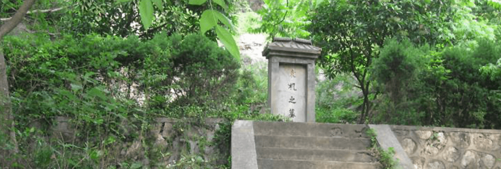

首页
汤山印象
汤山记忆
宜居宜业
汤山事记
汤山Life
吃~美食
住~旅憩
行~遇见
游~诗旅
购~值得
娱~悠闲
四季汤山
新闻动态
最新活动
全域旅游
汤山首页
汤山印象
汤山记忆
宜居宜业
汤山事记
汤山Life
吃~美食
住~旅憩
行~遇见
游~诗旅
购~值得
娱~悠闲
四季汤山
新闻动态
最新活动
全域旅游
千年古镇
之
寺庙
古迹
陵墓
别墅
宋武帝刘裕初宁陵
谢灵运墓寻访记
南康简王萧绩墓
叶状元墓袁
墓袁机墓
邓延桢墓
过探先墓
永安公墓
置顶 ↑
您的位置
>
首页
>
汤山记忆
>
人文历史
Humanistic History
千年圣汤
Millennium Springs
千年古镇
Millennium Town
陵墓
Emperor's Mausoleum
从麒麟集镇沿公路北行约1公里，便可以见到大道两侧各有一只巨大的石兽，昂首挺立、雄浑矫健、荫为大观。原来，这里便是1500多年前叱咤风云的南朝宋开国皇帝刘裕的归葬之地。 刘裕（363-422），宇德兴，小字寄奴，彭城（今徐州）人，迁居京口（今镇江），幼年贫穷，曾贩鞋、种地、捕鱼为生。后为东晋北府兵将领，败南燕、收巴蜀、灭后秦，战功赫赫，官至相国。元熙二年（420）代晋称帝。南宋大词人辛弃疾《永遇乐•京口北固亭怀古》中的名句“金戈铁马，气吞万里如虎”，称赞的正是这位具有传奇经历的一代君主。 据《景定建康志》载：“宋武帝陵在县东北二十里”。该志又引唐朝人许莆《建康实录》云，“宋高祖永初三年葬初宁陵隶建康县蒋山”（蒋山，即钟山）。据专家考证，刘宋王朝8位皇帝的皇陵“地点比较明确的，只有宋武帝刘裕的初宁陵一处”。帝王陵前的天禄、麒麟是吉祥的象征，也有驱邪求福的含意。这一对东西相向的大型石兽均为公兽，重约2万斤。东边的为天禄，原有的双角已损，颏下须卷下垂，腹侧刻有双翼，翼面前为鳞羽，后为长翎，四足已残缺，50年代整修时另作四石墩置于其下。修复后的天禄高2.9米、长2.9米、腰围3.1米。西边的为麒麟，高2.78米、长3.18米、腰围3.21米，除头雕独角（角尖已残断），头略后仰外，其体态、造型都与天禄相似。从石兽摆放的位置和地形看，这里是神道的人口处。 那么墓冢呢？一般来说，帝陵的墓冢距离神道石刻约千米左右，但从现场看为何一点踪影也不见呢？笔者以为这可能与刘裕墓冢的规模小不无关系。刘裕基不像某些皇帝陵工程浩大，堆土如山。如秦始皇陵，据《史记》所载，“坟高五十余丈”，按当时的尺值折算，其高度当在115米左右。可是，1982年测重时坟高仅为55.05米，可见历经2000年水土流失，封土高度与原来相比已降低过半。据《至正金陵新志》载，刘裕墓仅“周三十五步，高丈四尺”。这么一点高度和范围的封土，即使不被人为破坏，也早被大自然的千年风雨洗刷荡平，哪里还会有什么踪迹呢。 刘裕基的封土规模为什么这样小呢？这可能与这位出身寒门的开国皇帝的“清简寡欲”有关。据《南史》和《宋书》记载：刘裕“性尤简易”，无“珠玉舆马之怖，后庭无纨绮丝竹之音”，他还把当年躬耕于丹徒时的“耨耜之具”保存于内室，以便他的后代“知稼穑之艰难”。 值得一提的是，刘裕不但生活比较节俭，对于女色也能做到有所节制。如义熙十三年（417年），他出兵后秦，得到秦王姚兴的侄女。由于姚氏充满活力、美艳绝伦，具有异域独特的魅力，刘裕对其倍加宠爱甚至丢开朝政，终日与其相拥相伴、歌舞酒宴。他的亲信谢晦大为不满直言劝谏。刘裕翻然悔悟知错便改，立即忍痛割爱将姚氏遣出宫去。这对于一位封建帝王而言不能不说是难能可贵的。 初宁陵石兽雄立，古意幽然。我们在访胜怀古观赏这精美绝伦的南朝艺术瑰宝时，是否还该从墓主人身上得到一点有益的借鉴和启示呢？ 原载《江宁日报》2001年10月26日
在麒麟与汤山两镇交界的宁杭公路南侧的山峦中，埋藏着开我国山水诗派的鼻祖南朝宋诗人谢灵运和他的族弟谢惠连的墓冢。谢灵运与谢惠连情感相融、诗心相通，又是兄弟俩，故在文学史上被称为“大小谢”。 由于“大小谢”的卓著诗名，尤其是谢灵运对我国山水诗派形成的开山之功，南京历代地方志书对他们的归葬地均有所记。元《至正金陵新志》载：“谢灵运墓在上元县与本业寺相近，南唐保大中，里人孙熹等尝建碑。”清《同治上江两县志》载：“有本业寺……谢灵运墓在焉，惠连墓亦与寺相近。”《遭光上元县志》则更明确地记载：“宋谢灵运墓在本业寺。”志书中提到的本业寺为南朝古寺，它的遗址在今麒麟镇晨光村白家场自然村南面的山坡上。 明代永乐三年秋，翰林胡广、学士解缙、侍讲金幼孜三大臣，在奉皇命察看阳山碑材后的归途中，曾借宿本业寺，意欲寻访谢灵运墓，可是“叩僧（向僧人打听），僧不知其处。”为什么“僧不知其处”呢？笔者以为地方志书记载不详是一个重要原网。“在焉”、“在本业寺”，在本业寺哪个方向有多远，均未说清。 关于谢墓的地点，古稀老人张镛样有其独到的见解。他多方考证认为麒麟镇青西村一个叫谢塘的小村子正是诗人谢灵运葬身之地。其理由有三：其一，这谢塘村之名并非传说那样，天大旱多数塘干，惟此塘有水，村人感激称谢塘。而是与谢灵运墓葬在此处有关。其二，清《江宁府志》卷五十二载：“唐本业寺记，正书，在上元县。僧契抚撰，东山任德筠书。唐（实为南唐）乾德五年（公元967年）岁次丁卯七月十九日建。在上元麒麟门外谢塘村。”其三，明嘉靖《南畿志》“谢灵运墓”下小字注云：在蒋山里，张晋孙诗：“几年梦草句难成，一日春风草自生，来谒荒坟空展转，小塘幸有谢公名。”谢灵运墓为什么会葬在谢塘村呢？张老先生也有说法。他认为谢塘村一带曾是谢灵运祖父东晋名将“谢玄别墅之所在地”。这一带除了“谢塘”外，还有“小东山”、“谢家山”、“官塘”等相关的名称，确颇耐人寻味。 为了寻找谢灵运墓，1999年元月，笔者曾随同六朝史专家、省博物院罗宗真研究员，《南京史志》总编陈奋，县文管会负责人及张镛祥老先生赴谢塘村实地考察。当然，事出有因：《江宁报》上《谢灵运墓在谢塘村》的一篇报道在谢塘村引起轰动，有人在电话中声称“发现了谢灵运墓！”入村后，村干部便安排我们与“发现者”见面。这是一位72岁的热心老人，读过师塾，姓时。时老人告诉我们：“坟堆不小，坟前有碑”，并说他从小就在墓地一带玩。于是我们迎着凛凛寒风、踏着枯黄的野草跟着老人往东北凳子山方向走去。大约走了2华里，来到一座山坟前。坟丘上下布满荆棘和灌木丛。坟前有似“供台”的长条石，另有一碑状青石横斜于“供台”前，露出地面部分不到一尺，未见有文字。在此坟东侧一丈多远，又见有一坟，坟前也有一似“供桌”的长条石……见此情景，有人认为这里是谢灵运墓的可能性更大了。理由是谢灵运与谢惠连感情深厚，又同年（公元433年）去世，死后葬在一起相依为伴…… 当年已70岁的罗宗真研究员在细细察看周围地形和坟前的石器后，表达了不像是南朝时期墓的观点。他强调说，南朝大墓或有身份的墓主人，在风水上注重“太师椅”式的地势，而此墓不是；南朝时丧葬习俗“供桌”一类的石器一般置于墓内，且体积较小，此处恰恰相反；此外，从基地碑石风化程度看，没有孔洞，也不像是南朝的，而像是明清时代的。他同时说明，以上意见只是“初步认为”，因为碑石和墓内情况均未能“见底”。 针对大家寻找谢墓的焦急心情，罗宗真研究员分析说：谢灵运入宋后是获罪被杀的，当时其家族势力也已衰弱，因此其墓冢规模很可能平平。如果其墓位于山坡下，那么由于被水土流失所掩埋，一般来说1500年后的今天，墓冢至少已经在地表2至3丈以下。当然也不排除其墓在地质条件较好的山坡上，地面仍有踪迹可寻，这有待以后的发现。 关于这处墓地是否谢灵运墓，笔者在聆听了罗宗真研究员现场分析后受到启发，现不揣冒昧补充点滴。笔者以为这处墓冢是谢墓的可能性不火还有一个原因．那就是前文提到的双墓、双“供桌”。如果说谢灵运与谢惠连两墓紧靠在一起，这与地方志书记载不符。笔者所见到的自宋代以来近10种地方志书，凡记载谢灵运与谢惠连墓的，均未提及两墓相靠一起。如清嘉庆《江宁府志》载：“酣惠连墓在宣义乡，与本业寺相近，谢灵运墓在本业寺。”又如明《万历上元县志》载：“谢灵运墓在蒋山里，谢惠连墓在宣义乡，与本业寺相近。”读地方志书关于“大小谢”墓的记载，从字里行间我们不难体会到，两墓虽都在本业寺附近，两者之间是有一定距离的。 那么，谢灵运墓究竟在本业寺何方呢？笔者赞同张镛祥先生的“谢塘说”。除了前文张老所阐述的三点外，笔者尚有以下探讨心得：一，谢塘村离本业寺有三里路远，谢灵运墓如在谢塘村，地方志书为何不记在谢塘村，而记载在本业寺附近呢？这是因为一千多年前人烟稀少，谢塘村很可能还没有形成，而建于南朝梁天监九年的本业寺是当地名刹，故借助此寺来记录谢灵运墓的大体位置，这在志书和古文中是常见的。二，笔者在谢塘丰寸实地访问时，曾听村民说，目前的谢塘利已不在原来的位置。这是因为解放初期刚近建靶场，全村南移500米以上。这就是说谢塘村原来的位置，在今谢塘村以北1华里多。据笔者观察，这1华里外的地方是小山坡，地理位置更接近东北方向的本业寺。因此笔者以为谢塘村原址一带是值得留意的。 谢灵运墓虽然至今尚无踪影，但从历代地方志书的记载看，“大小谢”墓在本业寺附近该是一个公认的无须争论的事实。 诗魂常在，在故乡谜一样的山水间。我们当有信心去寻找，去开发！
萧绩墓在汤山集镇东南面10余华里的石狮沟村（古属上元县神泉乡，今属句容市环城镇），距今已有1470多年历史了。早在1956年，该墓即被列为江苏省级文物保护单位，1982年，省人民政府又重新公布其为省重点文物保护单位，现与南京地区19处南朝陵墓石刻一起已公布为第三批全国重点文物保护单位。 萧绩字世谨，梁武帝萧衍的第四子，于天监八年（公元509年）被封为南康郡王，普通四年（523年）征为侍中云麾将军，领石头城军事。“次年，出为使持节都督江州诸军事、江州刺史。”公元529年病死于任上，时年25岁。死后册封谥号为“简”，故又被称为南康简王。萧绩墓神道现存辟邪、华表各一对，俗称石狮和石柱的辟邪、华表分置东西，相对而立、威武高大。据有关资料介绍，在南京市郊和句容、丹阳共保存的32处六朝陵墓石刻中，萧绩墓地的石狮“是其中最宏伟，最完整的一处。” 两石狮中，东面的连座高4米、长3.6米、腰围粗4.2米，按一般石灰岩比重估计重量约为50吨左右。西面的石狮较东面的稍小一些。两石狮昂首挺胸、威武雄壮、气势磅礴，其口呈方形，长舌吐出垂至胸际：双眼圆睁，胸两侧刻鳞羽状似欲振翅高飞，其尾粗长垂地，腹下四巨足间可坐数人小憩。石狮北面约20米处立有神道石柱一对，柱础、柱身、柱盖三部分总高约6.5米。柱础上圆下方，刻双螭（古代传说中没有角的龙）衔珠；柱身刻24道瓜棱纹及龙形图案，柱身上部的柱额上刻有“梁故侍中将军开府仪同三司南康简王之神道”；柱顶罩有仰覆状莲圆盖，盖上立小石狮（小石辟邪）一只。 据江苏县邑风物丛书《句容》记载，萧绩墓“不仅誉满国内，而且蜚声海外。”上世纪20年代以来就有法国、英国、丹麦、日本、苏联等国家的多批学者、专家来此考察、观光，尤其是1924年法国一位考古专家在此摄下一张“骑马看狮”的照片，回到法国后还写出了专门介绍中国石狮的文章，更耐人寻味的是：1974年其子带着父亲30年前所撮照片，再次来到石狮沟村观察研究神圣的"六朝石狮"。 世事沧桑，萧绩墓冢如今已难寻觅，所幸这雄居于平川之上的神道石刻长留于天地间，见证历史。 原载《江宁日报》2001年12月14日
在汤山镇境内的阳山（即阳山碑材所在之山，又名孔山）一带，有一座状元基，这就是宋代的叶祖洽状元墓，因其官至微猷阁直学士，又称叶学士墓，俗传为丞相坟。 宋《景定建康志》载：“叶状元基在上元县宣义乡”，又云“合葬于江宁府上元县宣义乡雁门（指雁门山，即令孔山，笔者注）原夫人之基”。元《至正金陵新志》载：状元叶停礼名祖洽，“墓在上元县宣义乡雁门”。 叶祖洽字惇礼，宋代邵武（今福建邵武市）人，神宗熙宁三年（公元1071年）进士第一人。官至徽猷阁直学士，儆宗政和七年四月六日卒于真州（今江苏仪征市）。 明永乐年闻翰林胡广在《游阳山记》中，附带写到叶祖洽墓，写得还较具体，也可作为佐证。文日：“近东北二峰峭拔如削，即都城东门望见二峰青翠高耸者。山南有叶丞相基。叶祖洽，熙宁三年廷对第一，官至微猷阁直学士，终于真州，奉敕葬此。金陵志亦以为基在宣义乡，而俗误传叶丞相也。” 胡广在文中进一步提出了状元墓在“山南”，即令孔山之南。凑巧的是孔山南面的山腰上确有一大墓，因山石垒起的墓园似一大撮簸，敢当地人称“撮簸坟”。有人提出这可能就是叶状元墓，其实不是。笔者与同伴1992年皆专程去察看此墓，在现场见到“文革”中被挖毁怕墓穴前，一方青石墓碑虽断成数截，但其中较大的一块上尚清晰可辨“皇清考授”和“雍正贰年参月”的字样。显然，此墓主人为清代人，与宋代的叶祖洽相去甚远。 关于叶状元墓的确切位置历代记载不一。宋《景定建康志》和元《至正金陵新志》皆云在“上元县宣义乡雁门，并未说在山的哪一面。明代胡广《游阳山记》却说：“山南有叶丞相墓”，与之相反的是清代《同治上江两县志》载“山之北又有叶学士基……”。因此笔者认为，还应该以与叶祖洽同时代的宋《景定建康志》的记载为准，即在没有确切的证据以前我们只能说叶状元墓在今孔山一带。 原载《南京日报江宁版》2002年3月15日

袁机墓在“上元之羊山”，羊山又名阳山即今汤山镇境内的孔山。 袁机，生于康熙五十九年（1720年），字素文，别号青琳居士，浙江钱塘人，是清代文学家、江宁县令袁枚之妹。她与江苏如皋高姓指腹为婚，正式定婚时还不满周岁。婚前，高家因其子品性不端愿意解除婚约，但袁机却因受封建礼教影响太深，竟固执地坚持“从一而终”不肯解约。婚后丈夫为非作歹不务正业，她受尽折磨甚至几乎被卖身以抵赌债，不得已才逃回娘家。1759年因病去世，年仅40岁。 值得大书一笔的是，袁机也是颇有才学的。她自幼喜好读书，有时随袁枚听老师讲课，学到很多文史知识，能诗善文。冯尔康先生在所著《清人生活漫步》中评价说：“袁机为世称‘袁家三妹’之一，是18世纪文坛领袖之一袁枚(1712-1797)的三妹，别外两妹是四妹袁杼、堂妹袁棠，三人都是才女。”袁机的堂弟袁树则称她是“不栉进士”。袁机生前常以诗歌委婉地抒发自己悲凉的身世，如她的《闻雁》云：“秋高霜气重，孤雁最先鸣。响遇碧云冷，灯含永夜清。自从怜只影，几度作离声。飞到湘帘下，寒夜尚未成。”袁机死后，袁枚为她编印了诗集《素文女子遗稿》。乾隆丁亥（1767年）冬，袁枚“葬三妹素文于上元之羊山”，并写下凄楚动人的《祭妹文》。 《祭妹文》是袁枚散文的代表作，它以细腻的笔触抒发了作者对亡妹深切的悼念之情。全文追忆往昔、寓情于事、哀婉真切，具有强烈的感染力。古文评论家将其与韩愈《祭十二郎文》、欧阳修《泷冈阡表》同称为我国古代祭文中“鼎足而立”的三名篇之一。由于“祭妹文》的影响，原来不知名的袁机广为人知，成为本非名人的名人。 至于袁机墓的方位，《祭妹文》有如下描述：“羊山旷渺（广远），南望原隰（平原和低地），西望栖霞（栖霞山）……”可见该墓所处的地理位置比较高，南而和西面的视野比较开阔。另据《祭妹文》所载，该墓地共有四冢：一为袁机冢，一为袁机早夭女阿印冢，另有两侍者冢（分别为袁机父亲的侍妾朱氏和袁枚的侍妾陶氏）。其排列状况是，袁机和阿印两冢在上，两侍者冢在下。当地采药人曾告诉笔者，羊山主峰以东的一座山头上有几座土坟，方向是坐西朝东，这是否袁机墓呢？待考。笔者于此寄言有心人，在游览阳山（即羊山）碑材之余，不妨作寻觅袁机墓之举。
邓廷桢墓在汤山西北面麒麟镇灵山脚下。这位当年与钦差大臣林则徐一道“虎门销烟壮国威”的两广总督，安息在故乡的土地上已经150多年了。 邓廷桢(1775-1846)，字嶰筠，又字维周，江宁（今南京）人。故居在中华门西南隅城墙根老宅万竹园。他17岁便考中秀才，以后又考中举人和进士，从此步人仕途。先任编修、知府、布政使等职，1825年升任安徽巡抚，1835年再升两广总督。1839年与林则徐同心协力查禁鸦片、整顿海防，伸张了中国人民的浩然正气。次年初调任闽浙总督，率军击败进犯厦门的英军舰队，后受到巫陷，与林则徐同被革职，充军伊犁。1843年释回，任陕西巡抚、陕甘总督等职，1846年4月病逝于西安任所，终年71岁。 邓廷桢墓北依灵山、面向钟山，取坐东朝西向，据说这是为了表示墓主至死不忘西方列强侵我中华之恨、割我香港之耻。墓前原有两碑，一为邓廷桢墓碑，碑上篆书阴刻：“皇清诰封荣禄火夫振威将军显考懈筠府君之墓”；另一碑是邓夫人张氏墓碑，刻“皇清诰封一品夫人显妣张夫人之墓”，落款为“道光贰拾陆年”（1846）。上世纪50年代末，当地村民修水利，将墓碑砌于附近水库堤坝内。 为了纪念这位杰出的近代民族英雄，解放纵后人民政府四次修葺邓廷桢墓，将其列为省级文物保护单位。今日所见墓前之碑是南京市文物保管委员会1962年10月所立，碑高1.34米.宽0.6米、厚0.19米。碑正面刻“清两广、闽浙、陕甘总督邓廷桢之墓”，背面以阴文小楷记叙墓主生平和功绩，并说明：原碑“被埋于大蒲塘水库坝下，一时难以挖出，故立新碑以志其事”。碑后的墓冢是1981年重修的，圆形水泥墓冢高2.1米，直径4米。 基地四周，苍松翠柏掩映，绿竹尤多，倍显静谧肃穆。在墓地的台阶下、新修建的山涧桥头，近年又立起一块石碑，上书：“爱国主义教育基地”，款署：南京市人民政府。
在汤山镇孔山东南麓的“教育林”（今汤山林场汤山管理区内）长眠着我国现代农林学界的先驱者——过探先先生。 过探先先生字宪先，无锡人，生于1887年（光绪十三年），自幼热爱自然科学，决心“研习泰西，报效祖国”。1911年赴美留学，先后在威斯康辛和康乃尔大学攻读，获硕士学位。回国后，在东南大学、金陵大学担任教授兼系主任。他矢志农教，是我国农业教育重要的奠基人，他积极开展棉花新品种的科学研究，培育出“江阴白籽棉”等多个棉花新品种，提高了我国植棉水平和棉纺织品的国际竞争力。据有关资料记载，过先生是“中国最先提倡大规模人造森林”的“第一人”，他对江苏省林业的发展乃至汤山地区“教育林”、“模范林”的创建作出了不可磨灭的贡献。 1915年冬，他辞去第一甲种农校校长职务，发起并组过织“江苏省教育团公有林委员会”，置土地20万亩进行育苗造林。过先生的一生与汤山结下了不解之缘。他是汤山大面积造林的发起、组织和实践者。汤山地区的秃秃童山能有今日郁郁葱葱茂密森林，过先生之筹划、开拓是功不可没的。弟子陈植教授回忆70年前过先生开拓汤山林业的情景说：“那时，过先生带我们上汤山考察，我走在他后面，看见他裤子上有血，就问先生，先生告诉我是他痔疮发作了，这一件事现今记忆犹新。”（引自赵英东《过探先——中国现代农林学界先驱者》文）1929年过探先先生积劳成疾英年早逝，年仅43岁。江苏省教育林委员会划拨汤山林场山地3亩，用作安葬过先生墓地，金陵大学、中国科学社等12个社会团体募款树碑。 过探先墓原有牌坊、碑刻、石阶，墓栏等，青石铺砌的墓道长近百米，柏树、冬青排列有序，四季长青。可惜，在10年动乱中遭到严重的损毁。2002年2月，笔者探访了过探先先生的墓址。在“教育林”松柏掩映的小山中，一方高近1米的墓碑上书“显考过公探先之墓”，此碑为其儿女所立。碑后右侧明显可见存有一牌坊基础。登山坡北行数10米，意外见到一座高大的墓碑。此碑约高2米、宽眯、厚0.3米，四周有石栏围护。碑上落款为“中华民国十有九年十月武进吴敬恒撰书并篆额”。原来，这便是72年前国民党元老吴稚晖为过先生“撰书并篆额”的原碑。碑文阴刻、竖排，约五百余字。其中评价过先生“不惟学术为一时领袖，而性行尤超乎群伦；”他的早谢“其损失关系世界全人类，非独中国而已……” 与林场管理区工人攀谈得知，近年由于当地政府及过先生后人的努力，散失于附近村落、水塘的过墓部分墓碑、石柱等已经找回。前文所述见到的大小墓碑、墓石栏皆为近年重新树立的。笔者以为，过墓就在宁杭公路边，又紧邻汤山溶洞，如能进一步整修，重树牌坊，恢复原貌，则可成为供人瞻仰、游览的汤山风景区一处重要的人文景点。
民国时期，汤山境内有一座规模甚大的公墓，称“永安公墓”。公墓位于宁杭公路原京杭国道南侧、青龙山东麓，距宁杭公路边的坟头村约1公里。 永安公墓建于1935年（民国二十四年），是国民党元老、监察院院长于右任，立法院院长居正，警察厅长陈焯等人合伙创办的，具体业务由南京仁孝殡仪馆利济股份公司经营。当年，在坟头村附近通往墓地的石子路口，有一道木制的牌坊，其上有于右任题写的“永安公墓”四个金黄色大字。 公墓占地1040亩（一说700余亩），按地势分为福、禄、寿、免4个区。其中的福、禄、寿三区都是要花钱买地才能安葬的，只有西北面的免字区不用花钱买穴，那是贫穷死者的安葬地。墓区中央的山坡上陈旧的院落，是当年的工作场所。院门前有一对石狮，院内建有三座共九间飞檐翘角的老式房屋，正中的三间较大，是供做祭祀和佛事用的，东面三间是纪念堂，存放死者牌位，西面三间是办公室和会客室。据说正中三间门首原有于右任手书的“宏仁广孝”匾额，两旁楹联为：“相兆于山高水长，为孝子贤孙，普了慎终心愿；安养在人间天上，凡有情含识，惟一大事因缘”，旁署“民国二十四年盂秋梅川居正撰”。 由于永安公墓在京杭国道边，交通便利、视野开阔，又依靠青龙山脉，当时在南京是有些名气的。墓地安葬过不少国民党军政界人物，如有1928年在山东被日军杀害的我国17名外交官之一的张鸿渐“白石衣冠冢”，有国民党参谋本部第一厅厅长王纶中将墓，也有在淞沪战役中阵亡的中国军队团、营、连长等人的墓冢。此外，这里还埋葬着汪伪行政院副院长兼财政部长的臭名昭著的汉奸周佛海。据当地看守公墓的盛元高老人回忆，抗战胜利后，周佛海老婆杨淑惠花重金在永安墓“福”字区买了十二穴墓地。杨曾对老人说：“碑已做好，就不树了……”据《民国名人墓》（江苏古籍出版社）书中所记：“送葬的只有他生前的司机、警卫、厨师以及家属。他生前的朋友和同事中，只有一位刚从狱中被释放的新闻工作者金雄白前来送葬。”永安公墓也曾是一些文人学者心目中的归宿之地，如金陵大学（今南京大学）教授、著名学者和诗人胡翔冬，在抗日战争期间病逝于成都，临终遗言：抗战胜利后，归葬南京麒麟门外永安公墓。 永安公墓大部分墓冢在1966年“文革”中被毁，所幸的是由于此处改办皮肤病防治医院-前文提及的原来的房屋建筑未遭破坏，至今仍保存完好。